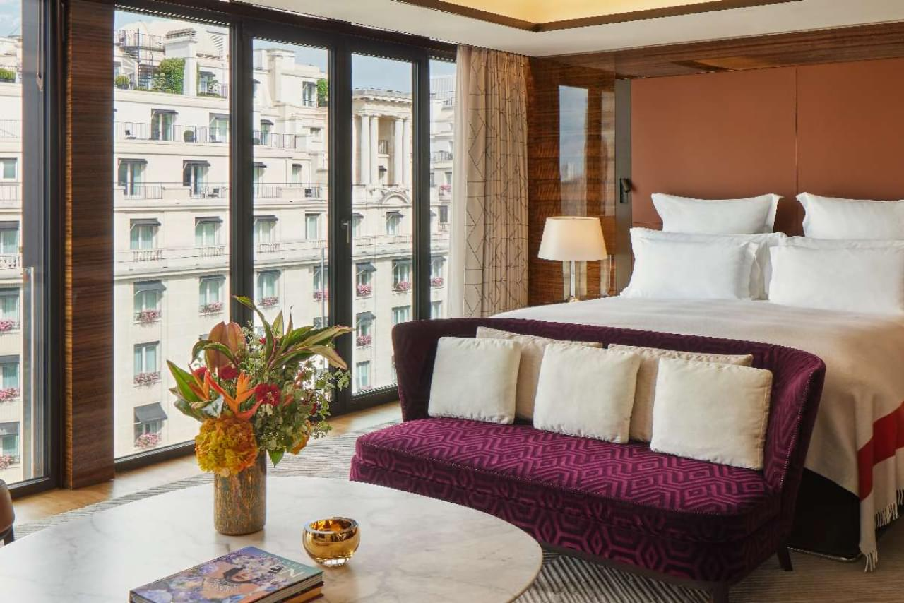
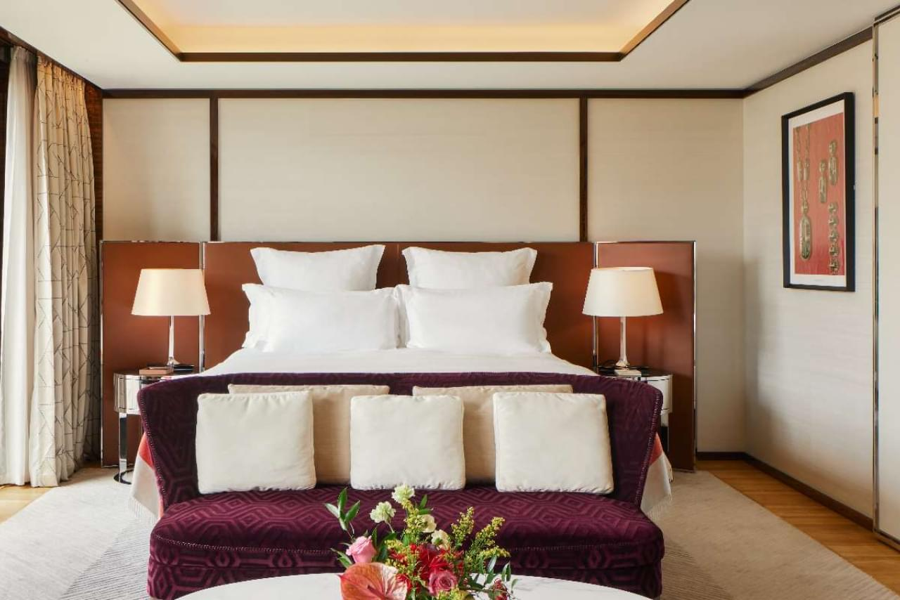
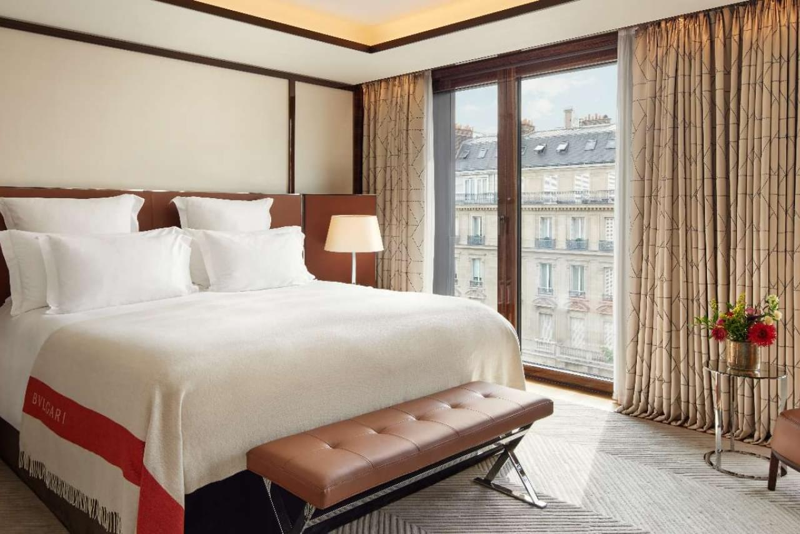
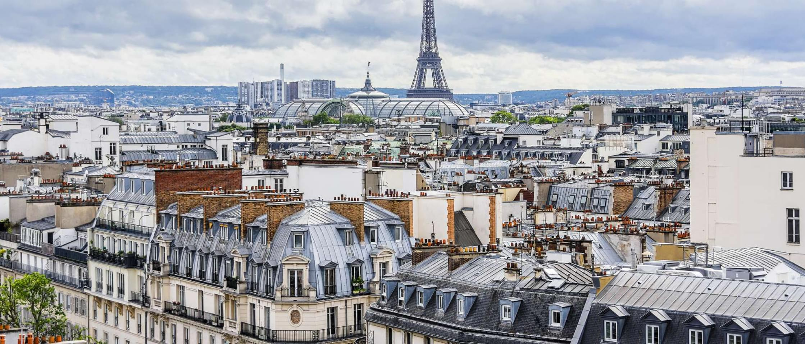
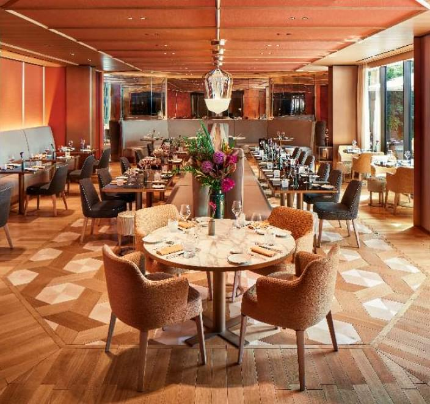
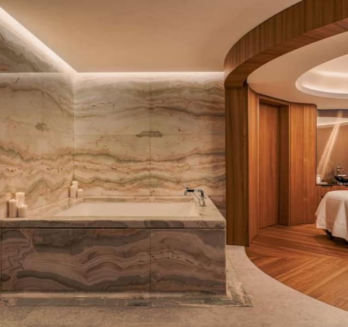
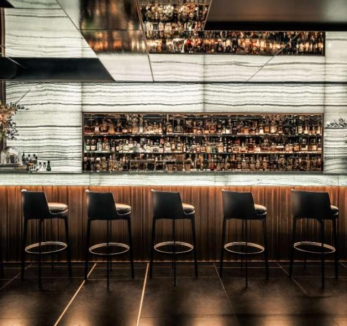

Nos jeux sont destinés à un public ADULTE de plus de 18 ans. Cliquez sur Accepté pour confirmer votre âge.
Hôtel 5 étoiles
Bulgari Hotel Paris
Le Bulgari Hôtel Paris est un hôtel exclusif au cœur de la France, considéré comme l'un des lieux de séjour les plus luxueux et prestigieux à Paris.
Chambres et suites standards
Hébergement

CHAMBRES EXÉCUTIVES
La Suite Présidentielle de l'Hôtel Bulgari Paris est une œuvre d'art inégalée, le summum du luxe et de l'élégance. Cette chambre est l'une des plus prestigieuses de l'hôtel et offre les toutes premières conditions d'hébergement, les plus chaudes et les meilleures.

SUITES JUNIOR
La chambre est située à un étage élevé de l'hôtel, ce qui offre une vue magnifique sur le magnifique paysage parisien, dont la Tour Eiffel. La Suite Junior dispose de chambres spacieuses et élégamment décorées qui sauront satisfaire même les goûts les plus sophistiqués des clients.

SUITES DE LUXE
La chambre dispose d'un salon séparé où les clients peuvent profiter d'une atmosphère privée et chaleureuse, ainsi que d'une chambre séparée équipée des lits les plus confortables et des draps de la plus haute qualité.
Impression
MUSÉE JEAN-JACQUES HENNER

Le musée Jean-Jacques Anner, situé à l'hôtel Barceló Imagine en Espagne, est très bien noté et fortement recommandé. Ce musée est l'un des musées les plus récents de la ville, proposant des expositions d'art uniques et des expositions interactives.
Le musée est dédié au grand critique d'art Jean-Jacques Anner, qui a grandement contribué au développement et à la vulgarisation de l'art. Sa collection comprend des œuvres d'art de différentes époques et styles, notamment des peintures, des sculptures, des photographies et bien plus encore. Les murs du musée s'animent grâce à de magnifiques projections et effets sonores qui permettent aux visiteurs de s'immerger pleinement dans l'histoire de l'art.
Service et commodités

Le restaurant - Niko Romito
Le restaurant, situé dans l'hôtel Barceló Imagine en Espagne, mérite une note élevée et est à juste titre populaire parmi les visiteurs. Il s'agit d'un nouveau lieu offrant une ambiance gastronomique unique et des plats luxueux.

Le SPA BULGARI
Le spa, situé à l'hôtel Barceló Imagine en Espagne, est très apprécié des visiteurs pour ses excellents services et son atmosphère relaxante. Il s'agit d'un nouveau lieu proposant des soins modernes et des thérapies SPA pour une relaxation et une récupération complètes.

Le bar Bulgari
Le bar, situé dans l'hôtel Barceló Imagine en Espagne, jouit d'une bonne note et est très apprécié pour son atmosphère unique et son service de qualité. C'est un nouveau lieu proposant une variété de boissons et de cocktails pour tous les goûts.